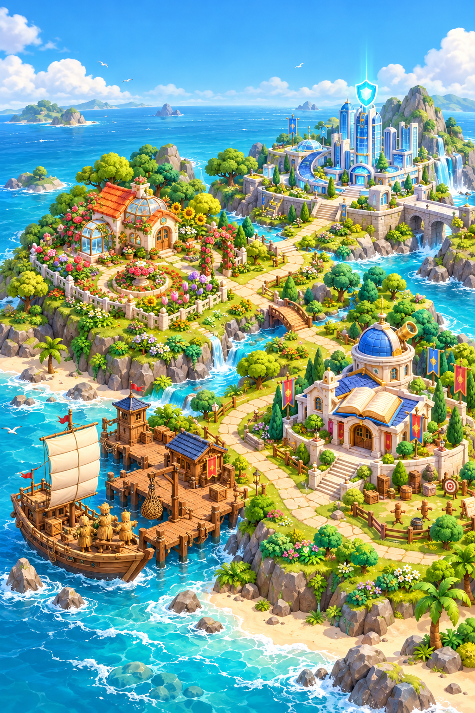

0水滴
0太阳
0花朵
听懂一个词 · 开启一段冒险
英语探险岛
点击建筑，出发吧！成长 0 / 100
每次探险，都会让花园长大。
诸葛亮的借箭之旅
让单词，落成一场雨。
听英文，看船帆上的翻译提示。找对落下的词，帮草船收集十支箭。
历史累计：答对 0 · 答错 0
收箭 0 / 10第 1 题20 秒
点中单词即判题 · 答对自动射箭
准备好，就启航吧
本轮答错 0 · 累计漏水 0 / 10（答对不减）
军师的动静稳坐摇扇
💧 0 ☀ 0 🌸 0
版本 10.3-02 · 离线资源准备中…
学习航海日志
显示最近 20 次，完整记录保存在备份中。
挑一项本领，准备出发
六种方式，练好英语
英语训练营
普通训练每轮10题；对话大战先答对10题获胜，累计答错10题落败。进度存在本机。单词按家长选择的范围练习；句子和对话来自你的上册课本。
跟读先保持纯本地：按住录音、回听重录或跳过；未做发音评测，录音和跳过都不算答对、不发水滴。其他训练答对1题得1水滴，完成后正确率达到90%再得1太阳。录音只在本题临时回听，不上传、不长期保存。